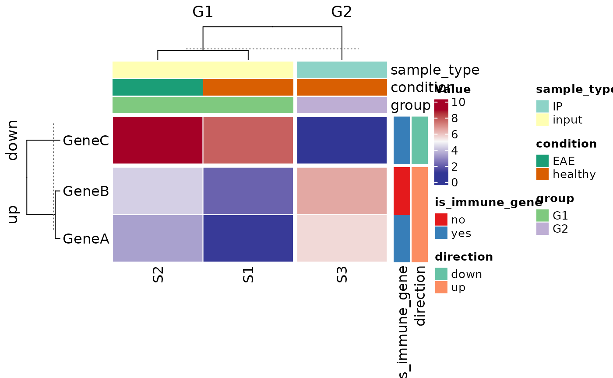
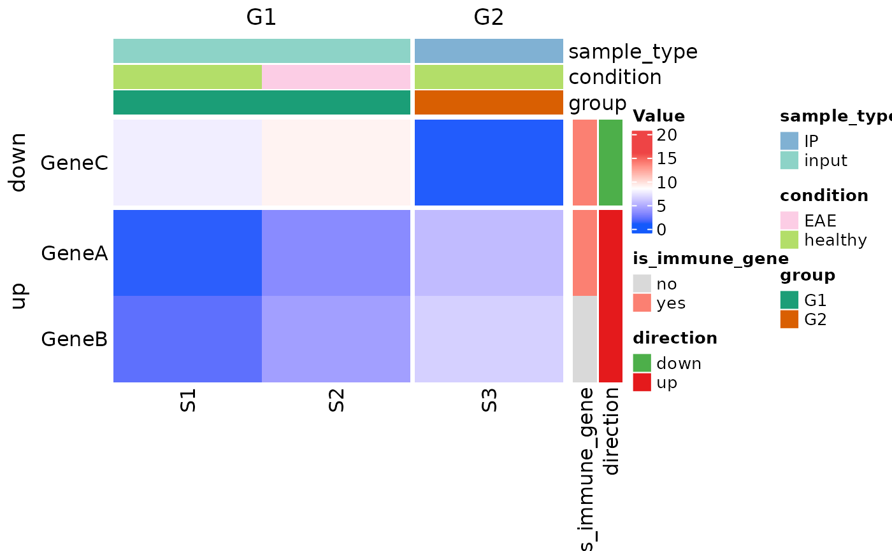
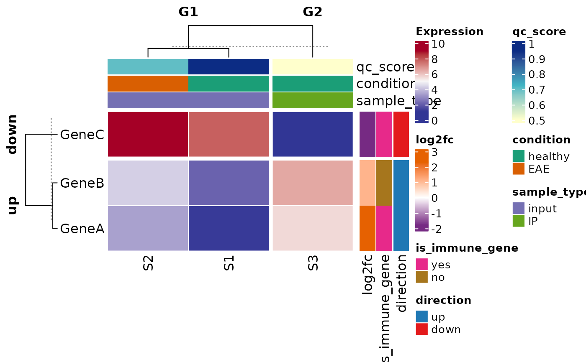
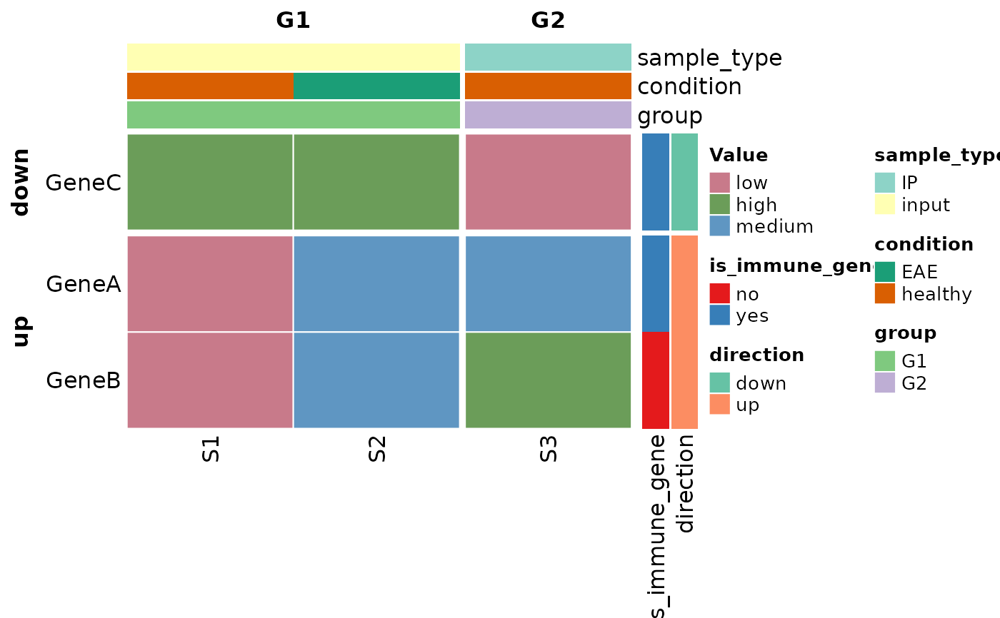
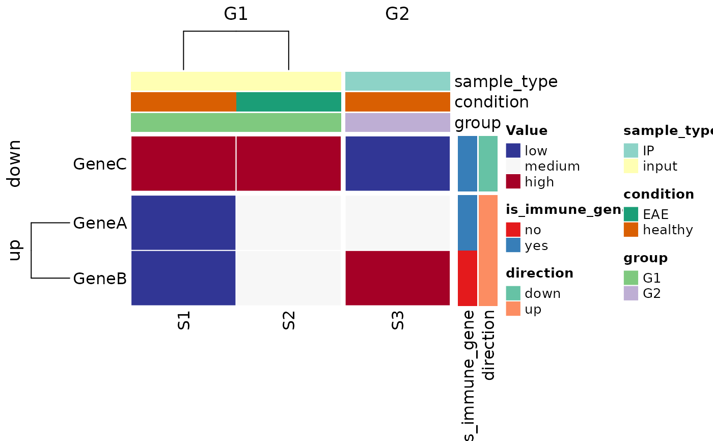

Converts a tidy (long-format) data frame into a matrix and renders a
Heatmap with optional row/column annotations,
splits, and row scaling.
Usage
plot_heatmap(
df,
row_var,
col_var,
value_var,
row_covariates = NULL,
col_covariates = NULL,
row_split_var = NULL,
col_split_var = NULL,
heatmap_colors = NULL,
anno_colors = NULL,
scale_rows = FALSE,
cluster_rows = TRUE,
cluster_columns = TRUE,
show_row_names = TRUE,
row_names_side = "left",
show_column_names = TRUE,
return_details = FALSE,
heatmap_legend_title = "Value",
rect_gp = grid::gpar(col = "white", lwd = 1),
...
)Arguments
- df
A data frame in long (tidy) format.
- row_var
<
data-masking> Column indfused as row identifiers.- col_var
<
data-masking> Column indfused as column identifiers.- value_var
<
data-masking> Numeric column indfused as heatmap fill values.- row_covariates
Character vector of column names in
dfto use as row annotations. DefaultNULL.- col_covariates
Character vector of column names in
dfto use as column annotations. DefaultNULL.- row_split_var
Character. Column name in
dfused to split rows. Must have \(\geq 2\) levels. DefaultNULL.- col_split_var
Character. Column name in
dfused to split columns. Must have \(\geq 2\) levels. DefaultNULL.- heatmap_colors
A color mapping passed to
Heatmap'scolargument. DefaultNULL, in which case a numeric color mapping is automatically generated (e.g. viacolorRamp2) rather than using ComplexHeatmap's built-in default.- anno_colors
Named list specifying colors for annotation covariates. For discrete (categorical) covariates, each element should be a named character vector mapping annotation levels to hex colors; any levels not supplied are auto-colored. For continuous (numeric) covariates, each element may instead be a function that maps numeric values to colors (e.g., a function created by
circlize::colorRamp2), which will be applied to the numeric annotation values to generate colors. DefaultNULL.- scale_rows
Logical. Whether to z-score scale rows.
- cluster_rows
Logical. Whether to cluster rows. Default
TRUE.- cluster_columns
Logical. Whether to cluster columns. Default
TRUE.- show_row_names
Logical. Default
TRUE.- row_names_side
"left"or"right". Default"left".- show_column_names
Logical. Default
TRUE.- return_details
Logical. If
TRUE, returns a list with the drawn heatmap object, final annotation colors, and levels. DefaultFALSE.- heatmap_legend_title
Character. Title for the heatmap legend
- rect_gp
A grid::gpar object of graphical parameters for heatmap cells (passed through to ComplexHeatmap::Heatmap's
rect_gpargument). Use it to control cell borders and lines (e.g.col,lwd,lty) or fill behavior. Default:grid::gpar(col = "white", lwd = 1). To hide borders userect_gp = grid::gpar(col = NA).- ...
Additional arguments passed to
Heatmap.
Value
Invisibly returns the drawn HeatmapList
object, or a named list with elements ht, final_colors, and
levels when return_details = TRUE.
Examples
data(ex_data_heatmap)
ht_cols_small <- circlize::colorRamp2(
c(min(1:16), mean(1:16), max(1:16)),
c("#145afc", "white", "#ee4445")
)
ann_cols_small <- list(
group = c(G1 = "#1b9e77", G2 = "#d95f02"),
direction = c(up = "#e41a1c", down = "#4daf4a"),
is_immune_gene = c(yes = "#fb8072", no = "#d9d9d9"),
sample_type = c(input = "#8dd3c7", IP = "#80b1d3"),
condition = c(healthy = "#b3de69", EAE = "#fccde5")
)
# default colors
plot_heatmap(
df = ex_data_heatmap,
row_var = external_gene_name,
col_var = sample,
value_var = expression,
row_covariates = c("is_immune_gene", "direction"),
col_covariates = c("sample_type", "condition", "group"),
row_split_var = "direction", # up vs down (2 slices)
col_split_var = "group", # G1 vs G2 (2 slices)
scale_rows = FALSE,
cluster_rows = TRUE,
cluster_columns = TRUE,
return_details = TRUE,
row_names_side = "left"
)

# custom colors
plot_heatmap(
df = ex_data_heatmap,
row_var = external_gene_name,
col_var = sample,
value_var = expression,
row_covariates = c("is_immune_gene", "direction"),
col_covariates = c("sample_type", "condition", "group"),
row_split_var = "direction",
col_split_var = "group",
scale_rows = FALSE,
cluster_rows = FALSE,
cluster_columns = FALSE,
heatmap_colors = ht_cols_small,
anno_colors = ann_cols_small,
return_details = TRUE
)

### Continuous row and column covariates via colorRamp2 functions
rng_log2fc <- range(ex_data_heatmap$log2fc, na.rm = TRUE)
col_fun_log2fc <- circlize::colorRamp2(
c(rng_log2fc[1], 0, rng_log2fc[2]),
c("#762a83", "white", "#e66101")
)
rng_qc <- range(ex_data_heatmap$qc_score, na.rm = TRUE)
col_fun_qc <- circlize::colorRamp2(
c(rng_qc[1], mean(rng_qc), rng_qc[2]),
c("#ffffcc", "#41b6c4", "#0c2c84")
)
expr_rng <- range(ex_data_heatmap$expression, na.rm = TRUE)
expr_cols <- circlize::colorRamp2(
c(expr_rng[1], mean(expr_rng), expr_rng[2]),
c("#313695", "#f7f7f7", "#a50026")
)
plot_heatmap(
df = ex_data_heatmap,
row_var = external_gene_name,
col_var = sample,
value_var = expression,
row_covariates = c("log2fc", "is_immune_gene", "direction"),
col_covariates = c("qc_score", "condition", "sample_type"),
col_split_var = "group",
row_split_var = "direction",
heatmap_colors = expr_cols,
anno_colors = list(
log2fc = col_fun_log2fc,
qc_score = col_fun_qc,
is_immune_gene = c(yes = "#e7298a", no = "#a6761d"),
direction = c(up = "#1f78b4", down = "#e31a1c"),
condition = c(healthy = "#1b9e77", EAE = "#d95f02"),
sample_type = c(input = "#7570b3", IP = "#66a61e")
),
scale_rows = FALSE,
cluster_rows = TRUE,
cluster_columns = TRUE,
show_row_names = TRUE,
row_names_side = "left",
heatmap_legend_title = "Expression"
)

##### make a categorical heatmap
cat_data <- ex_data_heatmap
cat_data$expression <- as.character(cut(
cat_data$expression,
breaks = c(-Inf, 3, 6, Inf),
labels = c("low", "medium", "high")
))
# default colors
plot_heatmap(
df = cat_data,
row_var = external_gene_name,
col_var = sample,
value_var = expression,
row_covariates = c("is_immune_gene", "direction"),
col_covariates = c("sample_type", "condition", "group"),
row_split_var = "direction", # up vs down (2 slices)
col_split_var = "group", # G1 vs G2 (2 slices)
scale_rows = FALSE,
cluster_rows = TRUE,
cluster_columns = TRUE,
return_details = TRUE,
row_names_side = "left"
)

# custom colors and clustering
heat_cat_colors <- c(
low = "#313695",
medium = "#f7f7f7",
high = "#a50026"
)
clust_dist_gower <- function(x) {
# x is the matrix supplied by Heatmap; convert to factors if needed
df <- as.data.frame(x)
df[] <- lapply(df, factor)
stats::as.dist(cluster::daisy(df, metric = "gower"))
}
plot_heatmap(
df = cat_data,
row_var = external_gene_name,
col_var = sample,
heatmap_colors = heat_cat_colors,
value_var = expression,
row_covariates = c("is_immune_gene", "direction"),
col_covariates = c("sample_type", "condition", "group"),
row_split_var = "direction", # up vs down (2 slices)
col_split_var = "group", # G1 vs G2 (2 slices)
scale_rows = FALSE,
cluster_rows = TRUE,
cluster_columns = TRUE,
return_details = TRUE,
row_names_side = "left",
clustering_distance_rows = clust_dist_gower,
clustering_distance_columns = clust_dist_gower
)
